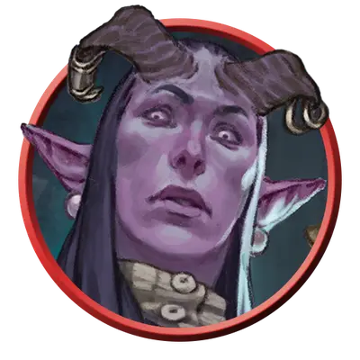

Босс громил
Tough Boss
Средний или Маленький Гуманоид, Нейтральный

Класс Защиты 16 Инициатива +2 (12)
Хиты 82 (11к8 + 33)
Скорость 30 футов
| мод | спас | ||
|---|---|---|---|
| СИЛ | 17 | +3 | +5 |
| ЛОВ | 14 | +2 | +2 |
| ТЕЛ | 16 | +3 | +5 |
| мод | спас | ||
|---|---|---|---|
| ИНТ | 11 | +0 | +0 |
| МДР | 10 | +0 | +0 |
| ХАР | 11 | +0 | +2 |
Чувства пассивное Восприятие 10
Языки Общий
Опасность 4 (1 100 опыта; БВ +2)
Особенности
Тактика стаи. Босс громил совершает с Преимуществом броски атаки по существу, если его союзник, не имеющий состояния Недееспособный, находится в пределах 5 футов от этого существа.
Действия
Мультиатака. Громила совершает две атаки Боевым молотом или Тяжёлым арбалетом в любой комбинации.
Боевой молот. Бросок рукопашной атаки: +5, досягаемость 5 фт. Попадание: 12 (2к8 + 3) Дробящего урона. Если цель — существо Большого размера или меньше, громила отталкивает цель от себя по прямой на расстояние вплоть до 10 футов.
Тяжёлый арбалет. Бросок дальнобойной атаки: +4, дистанция 100/400 фт. Попадание: 13 (2к10 + 2) Колющего урона.
Бонус мастерства +2
Среда обитания Любая
Сокровища Оружейные
Громилы
Громилы — это телохранители, задиры и простые трудяги, которые полагаются на грубую силу, чтобы запугивать противников. Среди них встречаются бывалые уголовники, шумные завсегдатаи таверн, чернорабочие и другие, привыкшие добиваться своего кулаками.
Благодаря уличной смекалке, бойцовским навыкам и репутации боссы громил заставляют других следовать своим указаниям.